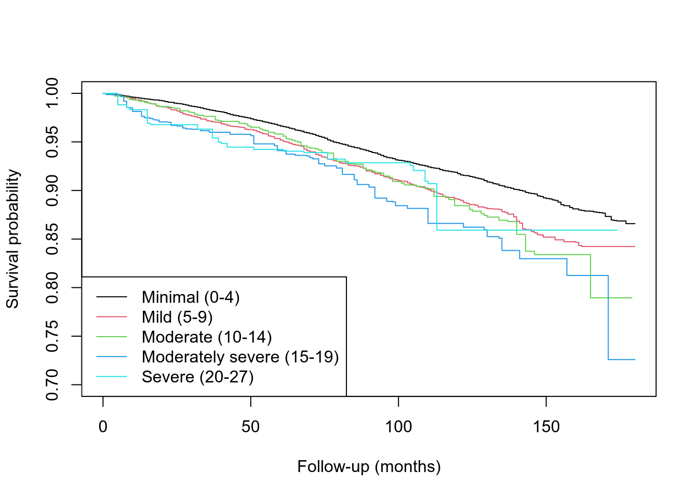

| Characteristic | Minimal (0-4) N = 201001 |
Mild (5-9) N = 40611 |
Moderate (10-14) N = 13761 |
Moderately severe (15-19) N = 5601 |
Severe (20-27) N = 2361 |
|---|---|---|---|---|---|
| age | 46 (33, 60) | 46 (32, 59) | 47 (33, 58) | 46 (34, 57) | 47 (37, 56) |
| sex | |||||
| Male | 10,715 (53%) | 1,728 (43%) | 529 (38%) | 200 (36%) | 84 (36%) |
| Female | 9,385 (47%) | 2,333 (57%) | 847 (62%) | 360 (64%) | 152 (64%) |
| race_ethnicity | |||||
| Non-Hispanic White | 9,026 (45%) | 1,850 (46%) | 593 (43%) | 249 (44%) | 110 (47%) |
| Non-Hispanic Black | 3,995 (20%) | 810 (20%) | 297 (22%) | 113 (20%) | 44 (19%) |
| Mexican American | 2,998 (15%) | 607 (15%) | 211 (15%) | 87 (16%) | 25 (11%) |
| Other Hispanic | 1,750 (8.7%) | 404 (9.9%) | 157 (11%) | 77 (14%) | 37 (16%) |
| Other Race - Including Multi-Racial | 2,331 (12%) | 390 (9.6%) | 118 (8.6%) | 34 (6.1%) | 20 (8.5%) |
| education | |||||
| Less than 9th grade | 1,727 (8.6%) | 381 (9.4%) | 162 (12%) | 85 (15%) | 36 (15%) |
| 9-11th grade (Includes 12th grade with no diploma) | 2,438 (12%) | 667 (16%) | 286 (21%) | 120 (21%) | 51 (22%) |
| High school graduate/GED or equivalent | 4,514 (22%) | 1,037 (26%) | 327 (24%) | 142 (25%) | 58 (25%) |
| Some college or AA degree | 5,980 (30%) | 1,266 (31%) | 437 (32%) | 159 (28%) | 74 (31%) |
| College graduate or above | 5,441 (27%) | 710 (17%) | 164 (12%) | 54 (9.6%) | 17 (7.2%) |
| marital_status | |||||
| Married | 11,102 (55%) | 1,778 (44%) | 495 (36%) | 182 (33%) | 73 (31%) |
| Widowed | 1,382 (6.9%) | 336 (8.3%) | 126 (9.2%) | 46 (8.2%) | 17 (7.2%) |
| Divorced | 1,976 (9.8%) | 538 (13%) | 233 (17%) | 110 (20%) | 53 (22%) |
| Separated | 541 (2.7%) | 167 (4.1%) | 92 (6.7%) | 35 (6.3%) | 21 (8.9%) |
| Never married | 3,494 (17%) | 862 (21%) | 301 (22%) | 119 (21%) | 44 (19%) |
| Living with partner | 1,605 (8.0%) | 380 (9.4%) | 129 (9.4%) | 68 (12%) | 28 (12%) |
| income_ratio | 3.40 (1.74, 5.00) | 2.41 (1.21, 4.30) | 1.74 (0.92, 3.49) | 1.65 (0.86, 2.86) | 1.35 (0.76, 2.51) |
| bmi | 27 (24, 31) | 28 (24, 33) | 29 (24, 34) | 29 (25, 34) | 29 (25, 33) |
| smoking_status | |||||
| never | 11,518 (57%) | 1,958 (48%) | 548 (40%) | 223 (40%) | 70 (30%) |
| former | 4,932 (25%) | 958 (24%) | 300 (22%) | 120 (21%) | 54 (23%) |
| current | 3,650 (18%) | 1,145 (28%) | 528 (38%) | 217 (39%) | 112 (47%) |
| diabetes | 2,120 (11%) | 595 (15%) | 234 (17%) | 108 (19%) | 57 (24%) |
| cvd | 1,669 (8.3%) | 512 (13%) | 212 (15%) | 112 (20%) | 68 (29%) |
| 1 Median (Q1, Q3); n (unweighted) (% (unweighted)) | |||||
PHQ-9 Depression Severity and All-Cause Mortality: A Survey-Weighted Analysis of NHANES
Methods
Data source
Data are drawn from seven consecutive NHANES cycles (2005-2006 through 2017-2018), chosen to span the full period for which both PHQ-9 depression screening and public-use mortality linkage are available (see repository README for the full cycle-selection rationale). All analyses account for NHANES’s complex survey design; sampling weights, clustering, and stratification (using the survey package).
Analysis was restricted to participants aged 20 years and over, matching the age range used in the NCHS benchmark against which this pipeline was validated. The final analytic sample comprises 26,333 participants and 2,460 deaths; the full exclusion cascade from the 42,022 linkage-eligible respondents is documented in the repository README.
Study design
NHANES is a cross-sectional survey; the cohort structure comes from the mortality linkage, not from pooling cycles. Pooling widens the entry window and increases the number of observed deaths, but follow-up time is supplied by the Linked Mortality File. Time zero is each participant’s MEC examination date, so exposure measurement and the start of follow-up coincide and no immortal time is accrued. Participants alive at the end of the linkage period are administratively censored at 31 December 2019; because that date is a property of the linkage file rather than of the participant, censoring is non-informative by construction.
Exposure: PHQ-9 depression severity
PHQ-9 was scored using complete-case scoring (all 9 items required; any single missing item sets the score to NA, no prorating) and grouped into the standard five severity bands (Minimal 0-4, Mild 5-9, Moderate 10-14, Moderately severe 15-19, Severe 20-27). PHQ-9 is a validated screening instrument for depressive symptom severity over the preceding two weeks, not a diagnostic instrument for major depressive disorder.
For the sensitivity analysis, PHQ-9 was additionally collapsed to a binary “depression” indicator (score >= 10), matching the threshold used in Brody, Pratt & Hughes (2018), NCHS Data Brief No. 303 — a threshold this project’s own pipeline also reproduced to the exact published prevalence (see validation below).
Outcome: all-cause mortality
Mortality status and follow-up time were obtained from the NCHS public-use Linked Mortality File, linked to NHANES respondents by SEQN. Follow-up time is measured in months from MEC exam date; only mortality-linkage-eligible respondents (ELIGSTAT == 1) are included. Respondents whom NCHS could not attempt to link are excluded at the cohort-definition stage rather than treated as censored survivors, since no mortality status exists for them.
Covariates
Age, sex, race/ethnicity, education, marital status, income-to-poverty ratio, BMI, smoking status, diabetes, and cardiovascular disease (composite of self-reported congestive heart failure, coronary heart disease, angina, heart attack, and stroke).
Survey design
The MEC exam weight (WTMEC2YR) was used rather than the interview weight because the PHQ-9 was administered during the MEC exam (confirmed against NCHS’s own documentation for each DPQ data file). The weight was divided by 7 to account for pooling seven cycles. Sampling strata were confirmed to be globally unique across all seven cycles (no cross-cycle collision), so cycles could be pooled directly. All restrictions are applied via subset() on the design object rather than by filtering rows out of the underlying data frame, which preserves the sample structure required for correct variance estimation.
Statistical analysis
A survey-weighted Cox proportional hazards model (svycoxph) was fit for PHQ-9 category (Minimal as reference) and all-cause mortality, adjusted for the covariates above. The proportional hazards assumption was checked for every covariate; age showed the strongest violation and was addressed via stratification in a refit model (sex and CVD’s more modest violations are reported as limitations rather than remedied; see Discussion).
Complete-case analysis was pre-specified and is applied explicitly in the model scripts rather than left to R’s default na.action.
As a sensitivity analysis, the binary depression exposure was also modeled using inverse probability of treatment weighting (IPTW) based on a propensity score for depression status, as an alternative to direct covariate adjustment for confounding.
Results
Table 1: Baseline characteristics by PHQ-9 severity
Counts shown are unweighted participants rather than weighted population estimates, so the number of observations behind each column is visible; medians and quartiles remain survey-weighted. A clear, largely monotonic pattern is visible across nearly every covariate. Sex shows a gradient closely matching well-established psychiatric epidemiology (roughly 2:1 female:male by Moderately severe); cardiovascular disease shows the steepest gradient of any covariate; race/ethnicity is comparatively flat by contrast. Education shows a strong inverse gradient, which is the confounding structure the model is adjusting for made visible.
Kaplan-Meier survival curves

These curves are unadjusted, so they show the crude survival difference between severity categories before any covariate adjustment. The adjusted estimates below are the interpretable ones.
Adjusted Cox proportional hazards model
| Characteristic | HR | 95% CI | p-value |
|---|---|---|---|
| phq9_category | |||
| Minimal (0-4) | — | — | |
| Mild (5-9) | 1.22 | 1.06, 1.41 | 0.006 |
| Moderate (10-14) | 1.28 | 1.03, 1.59 | 0.028 |
| Moderately severe (15-19) | 1.86 | 1.33, 2.61 | <0.001 |
| Severe (20-27) | 1.18 | 0.63, 2.22 | 0.6 |
| sex | |||
| Male | — | — | |
| Female | 0.64 | 0.58, 0.70 | <0.001 |
| race_ethnicity | |||
| Non-Hispanic White | — | — | |
| Non-Hispanic Black | 0.92 | 0.80, 1.04 | 0.2 |
| Mexican American | 0.55 | 0.46, 0.65 | <0.001 |
| Other Hispanic | 0.58 | 0.45, 0.75 | <0.001 |
| Other Race - Including Multi-Racial | 0.63 | 0.47, 0.83 | 0.001 |
| education | |||
| Less than 9th grade | — | — | |
| 9-11th grade (Includes 12th grade with no diploma) | 1.02 | 0.84, 1.24 | 0.8 |
| High school graduate/GED or equivalent | 0.99 | 0.83, 1.17 | 0.9 |
| Some college or AA degree | 0.91 | 0.76, 1.10 | 0.3 |
| College graduate or above | 0.76 | 0.63, 0.92 | 0.005 |
| marital_status | |||
| Married | — | — | |
| Widowed | 1.54 | 1.37, 1.73 | <0.001 |
| Divorced | 1.32 | 1.10, 1.59 | 0.003 |
| Separated | 1.50 | 1.04, 2.14 | 0.029 |
| Never married | 1.58 | 1.23, 2.01 | <0.001 |
| Living with partner | 1.34 | 0.99, 1.80 | 0.057 |
| income_ratio | 0.86 | 0.82, 0.91 | <0.001 |
| bmi | 0.99 | 0.98, 1.00 | 0.070 |
| smoking_status | |||
| never | — | — | |
| former | 1.24 | 1.07, 1.43 | 0.004 |
| current | 1.93 | 1.68, 2.21 | <0.001 |
| diabetes | 1.53 | 1.34, 1.74 | <0.001 |
| cvd | 1.72 | 1.51, 1.95 | <0.001 |
| Abbreviations: CI = Confidence Interval, HR = Hazard Ratio | |||
n = 26333, 2460 deaths. A clear, largely monotonic dose-response is evident from Mild through Moderately severe. The Severe category’s lower point estimate and loss of significance is attributable to its small size (236 participants in the analytic sample) and correspondingly few deaths rather than a genuine reversal of the trend: with so few events the partial likelihood is nearly flat along that coefficient, so the data do not meaningfully discriminate between a hazard ratio of 1.2 and one of 2.2. Its confidence interval is roughly twice as wide as Moderately severe’s.
Age was stratified in this model to address a proportional hazards violation identified via diagnostic testing (see R/12_cox_ph_check.R); sex and CVD showed more modest violations, documented as limitations below rather than remedied. PHQ-9 category itself showed no evidence of violation (p = 0.309), so the exposure of interest satisfies the assumption.
Discussion
This analysis found a largely monotonic dose-response relationship between PHQ-9 depression severity and all-cause mortality, adjusted for a substantial set of demographic, socioeconomic, and clinical confounders. The association held after correcting for a proportional hazards violation in age (the model’s strongest and mechanically most plausible violation, given that mortality risk does not rise linearly with age), and was directionally and materially consistent under an entirely different confounding-adjustment strategy (propensity-score weighting), rather than depending on one specific analytic choice.
The estimates are associations, not causal effects. Nothing in this design licenses a causal interpretation.
Limitations
The Severe category (PHQ-9 20–27) was underpowered. With 236 participants in the analytic sample and correspondingly few deaths, its confidence interval was roughly twice as wide as the Moderately severe category’s. Its point estimate (below Moderately severe’s) reflects sampling variability in a small subgroup rather than a genuine reversal of the broader dose-response trend, and should not be interpreted on its own.
Proportional hazards violations in sex and cardiovascular disease were identified but not remedied. Age’s violation was addressed via stratification; sex (p = 0.022) and CVD (p = 0.045) showed more modest violations that were left as direct covariates rather than stratified, to avoid fragmenting the model’s risk sets further. Their reported hazard ratios should be interpreted as an average effect across the follow-up period rather than a precisely constant one. Stratifying age also means no hazard ratio is estimated for age itself.
Reverse causation cannot be excluded. Undiagnosed serious illness at baseline could elevate both depressive symptoms and near-term mortality, producing an association that does not reflect any effect of depression itself. A sensitivity analysis excluding deaths within the first one to two years of follow-up would address this and is not currently implemented.
Several covariates may be mediators rather than confounders. Cardiovascular disease, diabetes, smoking, and BMI are measured cross-sectionally at the same visit as the exposure. Each is at least as plausible as a consequence of depression — via reduced treatment adherence, health behaviours, or access to care — as it is an independent confounder. Adjusting for a mediator biases the total effect toward the null, so the reported hazard ratios may understate the association. A model omitting these covariates would be a reasonable additional sensitivity analysis.
Depression severity is measured once, at baseline. The exposure is treated as fixed at time zero, but people move between severity categories over a follow-up period extending to fifteen years for the earliest entry cohort.
Unmeasured confounding remains possible. This model adjusts for a substantial covariate set, but cannot rule out residual confounding from factors not measured in NHANES (e.g., social support, treatment history, occupational exposures).
Complete-case analysis was pre-specified, but its bias cannot be signed. PHQ-9 scoring required all nine items; prorating partial responses would systematically deflate scores and misclassify respondents into milder categories, which is non-differential exposure misclassification and would attenuate the estimates. Missingness in PHQ-9 items and MEC attendance is plausibly missing-not-at-random, since depression severity itself drives non-attendance and item non-response; multiple imputation is valid under a missing-at-random assumption and would therefore produce narrower intervals around a still-biased estimate rather than less bias. The larger loss, however, is covariate missingness (7,731 participants, dominated by BMI and family income ratio) among people who did complete the PHQ-9. That mechanism is plausibly closer to missing-at-random, and multiple imputation restricted to covariates is a reasonable extension. The direction of the resulting bias cannot be formally signed, though the most plausible selection mechanism — healthy-participant selection removing proportionally more frail individuals from the severe category than from the reference category — would attenuate rather than inflate the estimates.
Complete-case exclusion is correlated with survey cycle. BMI completeness is substantially lower in the earliest cycles than in later ones, so the analytic sample is drawn disproportionately from later cycles.
Generalizability is limited to the non-institutionalized US civilian population captured by NHANES’s sampling frame across 2005–2018; findings may not extend to institutionalized populations, more recent years, or other countries’ populations and healthcare contexts.